Practice Log n Share
Septembro 2026
Superrigardo
Registri ekzercadon per unu tuŝo, poste montri la saman ekranon al la instruisto dum leciono. Mi planis kaj desegnis ĉi tiun iPhone-aplikaĵon por mia propra saksofonludado kaj realigis ĝin kunlabore kun AI.


- Rolo
- Planado, UX/UI-dezajno kaj realigo (kun Claude Code kaj Codex)
- Periodo
- Septembro 2026
- Teknologioj
- React · TypeScript; Swift (WKWebView, Live Activity, StoreKit, iCloud)
Provu la retan demonstraĵon (enhavas miajn proprajn ekzercregistrojn ĝis la 20-a de septembro 2026)
Deveno — «Kiel iras la ekzercado?»: mi ne povis respondi
Dum miaj lecionoj ĉiun duan semajnon, respondi «ĉefe gamojn» ne klarigis, kion mi ekzercis nek dum kiom da tempo. Estis malfacile skribi en papera taglibro kun saksofono pendanta ĉe la kolo, kaj la provitaj tempregistraj aplikaĵoj servis por propra retrorigardo.

Registrado — Kun la instrumento enmane, per unu tuŝo
Dum ekzercado mi tuŝas nur la kategoriajn kartojn. Tuŝo ekigas la mezuradon, alia karto ŝanĝas la kategorion, kaj dua tuŝo de la sama karto haltigas ĝin.
- 1 Historio
- La ĝisnuna ekzercado. La unua vidaĵo ĉe malfermo.
- 2 Hodiaŭ
- Ordo kaj divido de la ekzercado. Plena post unu horo.
- 3 Mezurado
- Nur ĉi tiu karto estas hela, kun blanka konturo.
- 4 Kartoj
- Tuŝu por ŝanĝi. La hodiaŭa tempo estas granda.
Unu tago — Plenigita stango restas plena
La hodiaŭa stango pleniĝas post unu horo. Poste la nuna totalo difinas la dekstran randon, por ke malpleno ne reaperu en jam plena stango.
Hodiaŭa ekzercado — 1 h 05 min
Elektita
Forlasita
Akumuliĝo — Ĉio videbla, ekde la unua tago
Verdaj nuancoj montras ekzercadon, ruĝaj kadroj lecionojn, kaj horizontala rulumado atingas la unuan registritan tagon. Mi prioritatis superrigardon pri plurjara ekzercado anstataŭ pli malpeza bildigo.

Kundivido — Komence de leciono, unu ekrano klarigas ĉion
Totaloj laŭ kategorio kaj ĉiutagaj detaloj resumas la tempon de la lasta leciono ĝis hodiaŭ, pretaj por montri al la instruisto. La taga tabelo enhavas ĉiujn kategoriojn sur unu ekrano, eĉ koste de pli malgranda teksto, sen horizontala rulumado.

Evoluo — Kartoj fariĝas la regpanelo de ekzercado
Mi konstruis la ekranojn laŭ specifo ellaborita per dialogo kun AI, poste mem ripete provis kaj reviziis ilin. En frua reta versio mi esploris registradon kaj kundividon, antaŭ ol realigi la aplikaĵon por iPhone.

9-a de septembro
Unua versio

21-a de septembro
Reta versio
24-a de septembro
iOS 1.0
- Nomo kaj tempo kune
- Mi montris la hodiaŭan tempon grande sur ĉiu karto, ligante la ekzercatan enhavon kun ĝia daŭro.
- La nuna stato je unu rigardo
- Mi heligis nur la karton kun aktiva mezurado kaj malheligis la ceterajn.
- Regiloj ene de la ekrano
- Mi igis la rulumadon halti tie, kie tuta vico de kartoj eniĝas en la ekranon.
Fine mi ripetis ciklon ĉirkaŭ 15 fojojn: Claude Code proponis eblajn problemojn, Codex kontrolis kaj korektis ilin, kaj mi decidis kiujn ŝanĝojn akcepti.
Sentumo — Elekti la haltmanieron per propra provo
Nur vortaj instrukcioj ne donis la senton «glate moviĝi kaj precize halti». Kun AI mi kreis agordilon por tuj ŝanĝi metodojn kaj valorojn, komparis kvin metodojn sur vera aparato kaj elektis la denaskan rulumfiksadon de la retumilo.
Ĝiba modelo

Antaŭvidita finpunkto

Denaska proximity
Elektita

Denaska mandatory

Sen fiksado


Kiel produkto — Preter ekzercado
La aspekto sekvas la aparatajn agordojn. Ekzercregistroj konserviĝas sur la aparato kaj aŭtomate savkopiiĝas al iCloud.

Dum uzado — La sekva demando: kiom detale registri
Mi uzis la aplikaĵon dum matena ekzercado kaj montris la ekranon al mia instruisto dum leciono. La respondo estis, ke la enhavo tuj kompreneblas kaj ke registri la gamtipojn estus ankoraŭ pli utile (parafrazo). Mi pripensas plian nivelon sub la kategorioj por pli da detaloj sen perdi simplecon.
Materialoj
La reta demonstraĵo ebligas provi registradon kaj kundividon. Ĝi enhavas miajn proprajn ekzercregistrojn ĝis la 20-a de septembro 2026; viaj ŝanĝoj konserviĝas nur en la uzata retumilo.


Malfermi la projektajn materialojn kiel PDF (japane, 4,4 MB)